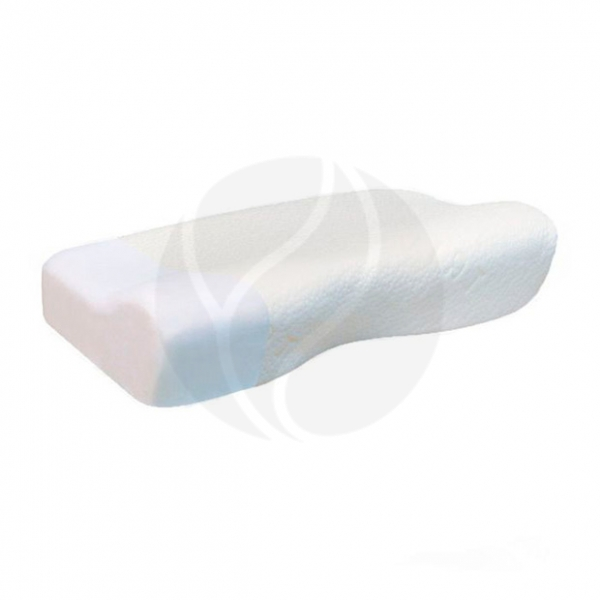
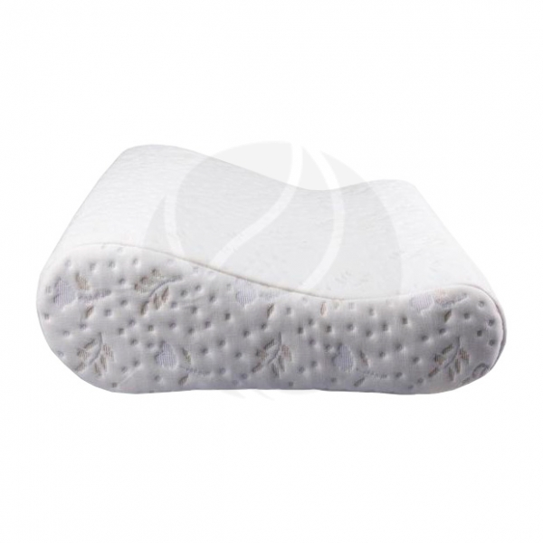
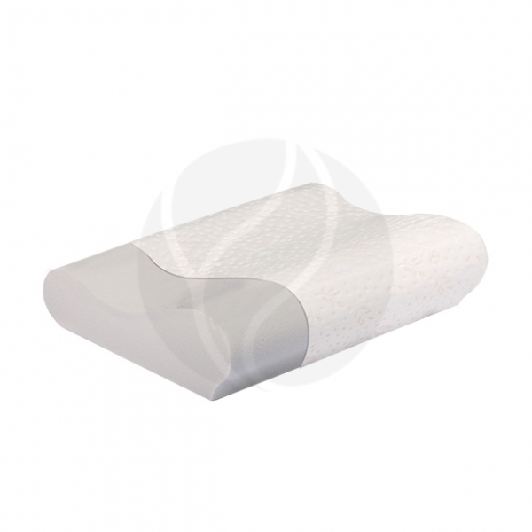

Ортопедические подушки
| Названия |
Состав |
Цена |
Внешний вид |
| 3571 |
Основа: вязкоэластичный пенополиуретан.
Чехол: хлопок — 100%.
Съемная наволочка из материала ThermoCool:
полиэстер — 67,8%.
ThermoCool — 32,2%.
|
Trives ТОП-119 подушка ортопедическая с эффектом памяти (р.М) |
 |
| 3412 |
Основа: вязкоэластичный пенополиуретан
Чехол: хлопок — 100%
Съемная наволочка из материала с добавлением молока:
Полиэстер — 65,4%
Вискоза — 24,4%
Молоко — 10,2%
|
Trives Т.504М подушка ортопедическая под голову (р.M+) |
 |
| 3239 |
Основа: вязкоэластичный пенополиуретан.
Чехол: хлопок — 100%.
Съемная наволочка с пропиткой алоэ вера:
Полиэстер — 74,6%.
Вискоза — 25,4%.
|
Trives Т.511М подушка ортопедическая под голову |
 |